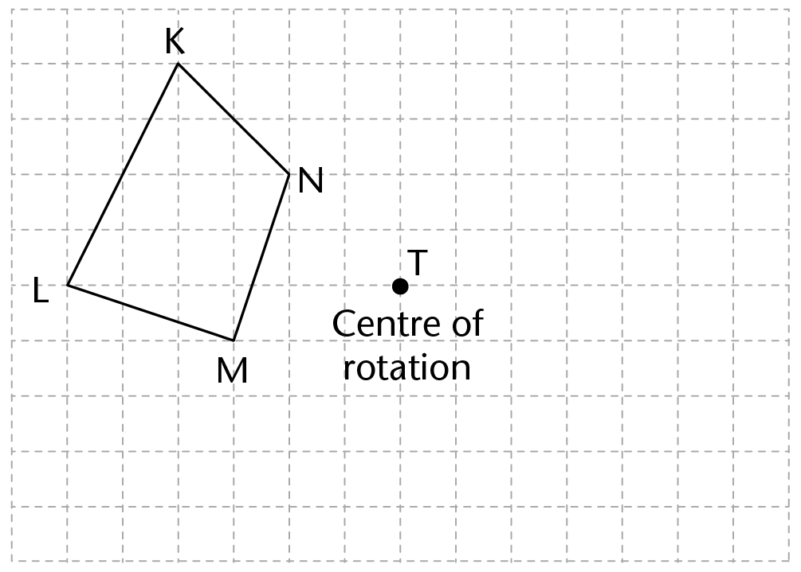

<div class="container">
  <div id="contents" class="col-md-12 main-content"><h1 xmlns="http://www.w3.org/1999/xhtml" lang="en-US" id="toc-id-21">Transformation geometry</h1>

    <p xmlns="http://www.w3.org/1999/xhtml" class="Body-opener-no-indent" lang="en-US">
    In this chapter, you will revise the property of symmetry and practise identifying lines of symmetry in geometric figures.
    You will then investigate how figures can be reflected, rotated or translated, while the size and shape of the original figure remains the same. You will also investigate how we can change the size of a figure, but still keep the angles of the figure the same, to produce enlarged or reduced similar figures. In such figures, you will work out the factor by which the original figure was resized.</p>


    <h2 xmlns="http://www.w3.org/1999/xhtml" lang="en-US" id="toc-id-22">Lines of symmetry</h2>

    <h3 xmlns="http://www.w3.org/1999/xhtml" class="Head-investigation--after-b-head-" lang="en-US">What is the line of symmetry?</h3>

    <p xmlns="http://www.w3.org/1999/xhtml" class="Body-no-indent" lang="en-US">In the diagrams below, the red dotted lines divide the arrows into two parts. In which diagram does the red dotted line divide the arrow into two parts that are exactly the same?</p>

    <hr xmlns="http://www.w3.org/1999/xhtml"/>
<p xmlns="http://www.w3.org/1999/xhtml" class="Body-no-indent" lang="en-US">
     </p>

    <div xmlns="http://www.w3.org/1999/xhtml" class="note"><p class="Body-content-no-indent" lang="en-US">If you were to cut out arrow A and fold it along the red dotted line, the two parts would fit perfectly on top of one another (all edges would match). The fold line is called a  <b>line of symmetry</b> or an
             <b>axis of             symmetry</b>.</p>
            <p>A line or axis of symmetry is a line that divides a
figure into two parts that have an equal number of
sides, and all the corresponding sides and angles
are equal. The two parts on either side of the line of
symmetry are mirror images of each other. We also
say the parts are  <b>congruent</b>.</p>
<p>A geometric figure can have no line of
symmetry, one line of symmetry, or more than one
line of symmetry.
</p>
            </div>

<div xmlns="http://www.w3.org/1999/xhtml" class="aside">
  <p> <b>Congruent</b> figures are
figures that are the same size
and shape. All the sides and
angles of the figures match.</p>

</div>
            <h3 xmlns="http://www.w3.org/1999/xhtml" class="Head-investigation" lang="en-US">Identifying lines of symmetry</h3>

    <p xmlns="http://www.w3.org/1999/xhtml" class="ques-a-" lang="en-US">1.	(a)	Make a tick next to each figure in which the red line is a line of symmetry.</p>

    <p xmlns="http://www.w3.org/1999/xhtml" class="ques-a-" lang="en-US">(b)	In the figures where the red line is not a line of symmetry, draw in a line of symmetry if this is possible. If there is more than one line of symmetry, 	draw it in too. If a figure doesn't have any lines of symmetry, write this above the figure.</p>

    <table xmlns="http://www.w3.org/1999/xhtml" id="table-56" class="no-border-plain"><colgroup><col class="Row-Column-189"/><col class="Row-Column-189"/></colgroup><tbody><tr class="Row-Column-192"><td class="none">
            <p class="caption" lang="en-US">A</p>

            <div class="frame-13"></div>

            </td>

          <td class="none">
            <p class="caption">B</p>

            <div class="frame-13"></div>

            </td>
        </tr><tr class="Row-Column-192"><td class="none">
            <p class="caption">C</p>

            <div class="frame-13"></div>

            </td>

          <td class="none">
            <p class="caption">D</p>

            <div class="frame-13"></div>

            </td>
        </tr><tr class="Row-Column-192"><td class="none">
            <p class="caption">E</p>

            <div class="frame-13"></div>

            </td>

          <td class="none">
            <p class="caption">F</p>

            <div class="frame-13"></div>

            </td>
        </tr></tbody></table><p xmlns="http://www.w3.org/1999/xhtml" class="Body-investigation-hanging" lang="en-US">2.	Draw lines of symmetry in the following geometric figures. Also write down how many lines of symmetry there are in each figure.</p>

    <table xmlns="http://www.w3.org/1999/xhtml" id="table-57" class="no-border-plain"><colgroup><col class="Row-Column-189"/><col class="Row-Column-189"/></colgroup><tbody><tr class="Row-Column-200"><td class="none">
            <p class="caption" lang="en-US">A</p>

            <p class="Body-no-indent" lang="en-US"> </p>

            <hr/>
</td>

          <td class="none">
            <p class="caption" lang="en-US">B</p>

            <p class="Body-no-indent" lang="en-US"> </p>

            <hr/>
</td>
        </tr><tr class="Row-Column-200"><td class="none">
            <p class="caption" lang="en-US">C</p>

            <p class="Body-no-indent" lang="en-US"> </p>

            <hr/>
</td>

          <td class="none">
            <p class="caption" lang="en-US">D</p>

            <p class="Body-no-indent" lang="en-US"> </p>

            <hr/>
</td>
        </tr><tr class="Row-Column-200"><td class="none">
            <p class="caption" lang="en-US">E</p>

            <p class="Body-no-indent" lang="en-US"> </p>

            <hr/>
</td>

          <td class="none">
            <p class="caption" lang="en-US">F</p>

            <p class="Body-no-indent" lang="en-US"> </p>

            <hr/>
</td>
        </tr></tbody></table><p xmlns="http://www.w3.org/1999/xhtml" class="Body-investigation" lang="en-US">
    3.	In each diagram, the dotted line is the axis of symmetry.
    Complete each figure.</p>

    <p xmlns="http://www.w3.org/1999/xhtml" class="caption" lang="en-US">A </p>
      <div xmlns="http://www.w3.org/1999/xhtml" class="frame-13"></div>
    <p xmlns="http://www.w3.org/1999/xhtml">	B</p>
      <div xmlns="http://www.w3.org/1999/xhtml" class="frame-13"></div>


    <h2 xmlns="http://www.w3.org/1999/xhtml" lang="en-US" id="toc-id-23">Original figures and their images</h2>

    <p xmlns="http://www.w3.org/1999/xhtml" class="Body-no-indent para-style-override-3" lang="en-US">Figures can be moved around in different ways - they can be shifted, swung around and turned over. When the movement is done, the figure in its new position is called the  <b>image</b> of the original figure.</p>

    <div xmlns="http://www.w3.org/1999/xhtml" class="note"><p class="Body-content-no-indent" lang="en-US">Figures can be moved in three ways:
            through  <b>translation</b>,
             <b>reflection</b>
            and  <b>rotation</b>. These transformations are often referred to as "sliding"
            (shifting), "flipping" (turning over) and "turning"
            (swinging) respectively.</p>
          </div>

    <h2 xmlns="http://www.w3.org/1999/xhtml" lang="en-US" id="toc-id-24">Translating figures</h2>

    <p xmlns="http://www.w3.org/1999/xhtml" class="Body-no-indent" lang="en-US">Here are two original figures and their images after the figures were  <b>translated</b>:</p>

    <p xmlns="http://www.w3.org/1999/xhtml" class="Body-no-indent para-style-override-1" lang="en-US"></p>

    <p xmlns="http://www.w3.org/1999/xhtml" class="Body-no-indent" lang="en-US">When we name the image, we use the same letters for the points that correspond to those of the original figure, but we add the prime symbol ( ' )
    after each letter. The image of \(\triangle JKL\) is \(\triangle J'K'L'\). The image of parallelogram DEFG is D'E'F'G'.</p>

    <h3 xmlns="http://www.w3.org/1999/xhtml" class="Head-investigation" lang="en-US">Investigating the properties of translation</h3>

    <p xmlns="http://www.w3.org/1999/xhtml" class="Body-no-indent" lang="en-US">In a
     <b>translation</b>, all the points on the figure move in the same direction by the same distance. For example, look at \(\triangle JKL\) on the previous page. All of its points have moved 6 units to the right. Also look at figure DEFG on the previous page. All of its points have moved 3 units to the right and 5 units down.</p>

    <p xmlns="http://www.w3.org/1999/xhtml" class="Body-investigation" lang="en-US">
    1.	Look at \(\triangle ABC\) below.</p>

    <p xmlns="http://www.w3.org/1999/xhtml" class="ques-a-" lang="en-US">(a)	Translate each of the points A, B and C 5 units to the right and 2 units down.
    Then join the translated points to form the image
    \(\triangle A'B'C'\).</p>

    <p xmlns="http://www.w3.org/1999/xhtml" class="ques-a-" lang="en-US">
     </p>

    <p xmlns="http://www.w3.org/1999/xhtml" class="ques-a-" lang="en-US">Look at the completed translation.</p>

    <p xmlns="http://www.w3.org/1999/xhtml" class="ques-a-" lang="en-US">(b)	Are the side lengths of the original triangle and those of its image the same?</p>

    <hr xmlns="http://www.w3.org/1999/xhtml"/>
<p xmlns="http://www.w3.org/1999/xhtml" class="ques-a-" lang="en-US">(c)	Is the area of the original triangle the same as the area of its image?</p>

    <hr xmlns="http://www.w3.org/1999/xhtml"/>
<p xmlns="http://www.w3.org/1999/xhtml" class="Body-investigation" lang="en-US">
    2.	Look at \(\triangle PQR\) below.</p>

    <p xmlns="http://www.w3.org/1999/xhtml" class="ques-a-" lang="en-US">(a)	Translate each of the points P, Q and R 4 units to the right and 2 units up.
    Then join the translated points to form the image
    \(\triangle P'Q'R'\).</p>

    <p xmlns="http://www.w3.org/1999/xhtml" class="ques-a-" lang="en-US">
     </p>

    <p xmlns="http://www.w3.org/1999/xhtml" class="ques-a-" lang="en-US">(b)	Join point P and its image, point Q and its image, and point R and its image.</p>

    <p xmlns="http://www.w3.org/1999/xhtml" class="ques-a-" lang="en-US">(c)	Are the line segments that join the original points to their image points equal in length?</p>

    <hr xmlns="http://www.w3.org/1999/xhtml"/>
<p xmlns="http://www.w3.org/1999/xhtml" class="ques-a-" lang="en-US">(d)	Are the line segments that join the original points to their image points parallel?</p>

    <hr xmlns="http://www.w3.org/1999/xhtml"/>
<div xmlns="http://www.w3.org/1999/xhtml" class="note"><p class="Body-content-no-indent" lang="en-US">Use the diagram on the right to check if the following is true:</p>
            <ul>
            <li>The line segments that connect the vertices
of the original figure to those of the image
are all equal in length:
PP' = RR' = QQ'</li>
<li>The line segments that connect the vertices
of the original figure to those of the image
are all parallel to one another:
PP' || RR' || QQ'</li>
            <li>When a figure is translated, its shape and
size do not change. The original and its
image are therefore congruent. </li>
            </ul>

            </div><div xmlns="http://www.w3.org/1999/xhtml" class="frame-13"></div>

    <h3 xmlns="http://www.w3.org/1999/xhtml" class="Head-investigation" lang="en-US">Practise translating figures</h3>

    <p xmlns="http://www.w3.org/1999/xhtml" class="Body-investigation" lang="en-US">
    1.	Translate the following figure 8 units to the left and 2 units down.</p>

    <p xmlns="http://www.w3.org/1999/xhtml" class="Body-investigation para-style-override-20" lang="en-US"> </p>

    <p xmlns="http://www.w3.org/1999/xhtml" class="Body-investigation" lang="en-US">
    2.	Translate the following figure 6 units to the right and 1 unit down.</p>

    <p xmlns="http://www.w3.org/1999/xhtml" class="Body-investigation para-style-override-20" lang="en-US"> </p>

    <p xmlns="http://www.w3.org/1999/xhtml" class="Body-investigation-spaced" lang="en-US">3.	Describe the translation in each of the following diagrams:</p>

    <p xmlns="http://www.w3.org/1999/xhtml" class="ques-a-">(a)</p>

    <hr xmlns="http://www.w3.org/1999/xhtml"/>
<p xmlns="http://www.w3.org/1999/xhtml" class="ques-a- para-style-override-1" lang="en-US"></p>

    <p xmlns="http://www.w3.org/1999/xhtml" class="ques-a--2-column">(b)</p>

    <hr xmlns="http://www.w3.org/1999/xhtml"/>
<p xmlns="http://www.w3.org/1999/xhtml" class="ques-a--2-column">(c)</p>

    <hr xmlns="http://www.w3.org/1999/xhtml"/>
<div xmlns="http://www.w3.org/1999/xhtml">
      <div class="frame-13"></div>

      <div class="frame-13"></div>
    </div>

    <h2 xmlns="http://www.w3.org/1999/xhtml" lang="en-US" id="toc-id-25">Reflecting figures</h2>

    <p xmlns="http://www.w3.org/1999/xhtml" class="Body-no-indent" lang="en-US">When a figure is  <b>reflected</b>,
    it is flipped or turned over. The image that is produced is the mirror image of the original figure. The  <b>line of reflection</b> is like a mirror in which the original figure is reflected.</p>

    <p xmlns="http://www.w3.org/1999/xhtml" class="Body" lang="en-US">The image is produced on the opposite side of the line of reflection. Each point on the original figure and its corresponding point on the image are the same distance away from the line of reflection.</p>

    <h3 xmlns="http://www.w3.org/1999/xhtml" class="Head-investigation" lang="en-US">Investigating the properties of reflection</h3>

    <p xmlns="http://www.w3.org/1999/xhtml" class="Body-no-indent" lang="en-US">The diagrams below and on the next page show examples of figures that have been correctly and incorrectly reflected in the lines of reflection.</p>

    <p xmlns="http://www.w3.org/1999/xhtml" class="Body-no-indent" lang="en-US">
     </p>

    <div xmlns="http://www.w3.org/1999/xhtml">
      <div class="frame-13"></div>

      <div class="frame-13"></div>
    </div>

    <p xmlns="http://www.w3.org/1999/xhtml" class="Body-investigation para-style-override-3" lang="en-US">1.	Write down the distance from each of the following points to the line of reflection.</p>

    <table xmlns="http://www.w3.org/1999/xhtml" id="table-60" class="No-Table-Style"><colgroup><col class="Row-Column-80"/><col class="Row-Column-80"/><col class="Row-Column-80"/></colgroup><tbody><tr class="Row-Column-74"><td class="cell-style-override-3">
            <p class="Table-header-left" lang="en-US">Original figure</p>
          </td>

          <td class="cell-style-override-3">
            <p class="Table-header-left" lang="en-US">Correct reflection</p>
          </td>

          <td class="cell-style-override-3">
            <p class="Table-header-left" lang="en-US">Incorrect reflection</p>
          </td>
        </tr><tr class="Row-Column-74"><td class="cell-style-override-3">
            <p class="Table-text-left">A: 2 units</p>
          </td>

          <td class="cell-style-override-5">
            <p class="Table-text-left">A':</p>
          </td>

          <td class="cell-style-override-5">
            <p class="Table-text-left">A':</p>
          </td>
        </tr><tr class="Row-Column-74"><td class="cell-style-override-3">
            <p class="Table-text-left">B:</p>
          </td>

          <td class="cell-style-override-5">
            <p class="Table-text-left">B':</p>
          </td>

          <td class="cell-style-override-5">
            <p class="Table-text-left">B':</p>
          </td>
        </tr><tr class="Row-Column-74"><td class="cell-style-override-3">
            <p class="Table-text-left">C:</p>
          </td>

          <td class="cell-style-override-5">
            <p class="Table-text-left">C':</p>
          </td>

          <td class="cell-style-override-5">
            <p class="Table-text-left">C':</p>
          </td>
        </tr><tr class="Row-Column-74"><td class="cell-style-override-3">
            <p class="Table-text-left">D:</p>
          </td>

          <td class="cell-style-override-5">
            <p class="Table-text-left">D':</p>
          </td>

          <td class="cell-style-override-5">
            <p class="Table-text-left">D':</p>
          </td>
        </tr><tr class="Row-Column-74"><td class="cell-style-override-3">
            <p class="Table-text-left">E:</p>
          </td>

          <td class="cell-style-override-5">
            <p class="Table-text-left">E':</p>
          </td>

          <td class="cell-style-override-5">
            <p class="Table-text-left">E':</p>
          </td>
        </tr><tr class="Row-Column-74"><td class="cell-style-override-3">
            <p class="Table-text-left">F:</p>
          </td>

          <td class="cell-style-override-5">
            <p class="Table-text-left">F':</p>
          </td>

          <td class="cell-style-override-5">
            <p class="Table-text-left">F':</p>
          </td>
        </tr><tr class="Row-Column-74"><td class="cell-style-override-3">
            <p class="Table-text-left">G:</p>
          </td>

          <td class="cell-style-override-5">
            <p class="Table-text-left">G':</p>
          </td>

          <td class="cell-style-override-5">
            <p class="Table-text-left">G':</p>
          </td>
        </tr><tr class="Row-Column-74"><td class="cell-style-override-3">
            <p class="Table-text-left">H:</p>
          </td>

          <td class="cell-style-override-5">
            <p class="Table-text-left">H':</p>
          </td>

          <td class="cell-style-override-5">
            <p class="Table-text-left">H':</p>
          </td>
        </tr><tr class="Row-Column-74"><td class="cell-style-override-3">
            <p class="Table-text-left">K:</p>
          </td>

          <td class="cell-style-override-5">
            <p class="Table-text-left">K':</p>
          </td>

          <td class="cell-style-override-5">
            <p class="Table-text-left">K':</p>
          </td>
        </tr></tbody></table><p xmlns="http://www.w3.org/1999/xhtml" class="Body-investigation" lang="en-US">
    2.	Look at each set of <i>correct</i> reflections.</p>

    <p xmlns="http://www.w3.org/1999/xhtml" class="ques-a-" lang="en-US">(a)	Are the side lengths of the image the same as those of the original figure?</p>

    <hr xmlns="http://www.w3.org/1999/xhtml"/>
<p xmlns="http://www.w3.org/1999/xhtml" class="ques-a-" lang="en-US">(b)	Are the size and shape of the image the same as the size and shape of the original figure?</p>

    <hr xmlns="http://www.w3.org/1999/xhtml"/>
<p xmlns="http://www.w3.org/1999/xhtml" class="ques-a-" lang="en-US">3.	(a)	In each diagram showing the <i>correct</i> reflection, draw a dotted line to join each point on the original figure to its corresponding reflected point (A to A', B to B',
    C to C' and so on).</p>

    <p xmlns="http://www.w3.org/1999/xhtml" class="ques-a-" lang="en-US">(b)	Is the line that joins the original point to its correct reflection perpendicular to the line of reflection?</p>

    <hr xmlns="http://www.w3.org/1999/xhtml"/>
<p xmlns="http://www.w3.org/1999/xhtml" class="ques-a-" lang="en-US">4.	(a)	In each diagram showing the <i>incorrect</i> reflection, draw a dotted line to join each point on the original figure to its corresponding reflected point.</p>

    <p xmlns="http://www.w3.org/1999/xhtml" class="ques-a-" lang="en-US">(b)	Is the line that joins the original point to its incorrect reflection perpendicular to the line of reflection?</p>

    <hr xmlns="http://www.w3.org/1999/xhtml"/>
<div xmlns="http://www.w3.org/1999/xhtml" class="note"><p class="Body-content-no-indent"> <b>Properties of             reflection</b></p>

            <p class="Body-content-no-indent"/>

            <p class="Body-content-no-indent" lang="en-US">The diagram on the right show<span class="M-Body-no-indent-Char" lang="en-US">s
            \(\triangle FHG\) and its reflection \(\triangle F\)</span><span class="M-Body-no-indent-Char char-style-override-24" lang="en-US">'</span><span class="M-Body-no-indent-Char" lang="en-US">H</span><span class="M-Body-no-indent-Char char-style-override-24" lang="en-US">'</span><span class="M-Body-no-indent-Char" lang="en-US">G</span><span class="M-Body-no-indent-Char char-style-override-24" lang="en-US">'</span><span class="M-Body-no-indent-Char" lang="en-US">.
            Notice the following properties of reflection:</span></p>

            <p class="ques-a- para-style-override-7" lang="en-US"> </p>
            <ul>
              <li>The image of ∆FHG lies on the opposite
side of the line of reflection.</li>
<li>
  The distance from the original point to
the line of reflection is the same as the
distance from the reflected point to the
line of reflection: GE = G'E; FC = F'C and
HD = H'D
</li>
<li>
  The line that connects an original point to its
image is always perpendicular (\(\perp\)) to the line of
reflection: HH' \(\perp\) line of reflection; FF' \(\perp\) line of
reflection, and GG' \(\perp\) line of reflection.
</li>
<li>
  When a figure is reflected, its shape and size do
not change. The original and its image are
therefore congruent.
</li>
            </ul>

            </div><h3 xmlns="http://www.w3.org/1999/xhtml" class="Head-investigation" lang="en-US">Practise reflecting figures</h3>

    <p xmlns="http://www.w3.org/1999/xhtml" class="Body-investigation-hanging" lang="en-US">1.	Reflect the following figures in the given line of reflection. (<i>Hint</i>:
    First reflect the points; then join the reflected points.)</p>

    <p xmlns="http://www.w3.org/1999/xhtml" class="ques-a-" lang="en-US">(a)</p>

    <p xmlns="http://www.w3.org/1999/xhtml" class="ques-a- para-style-override-7" lang="en-US"> </p>

    <p xmlns="http://www.w3.org/1999/xhtml" class="ques-a-" lang="en-US">(b)</p>

    <p xmlns="http://www.w3.org/1999/xhtml" class="ques-a- para-style-override-18" lang="en-US"></p>

    <p xmlns="http://www.w3.org/1999/xhtml" class="ques-a-" lang="en-US">(c)</p>

    <p xmlns="http://www.w3.org/1999/xhtml" class="ques-a- para-style-override-7" lang="en-US"> </p>

    <p xmlns="http://www.w3.org/1999/xhtml" class="Body-investigation-spaced" lang="en-US">2.	Draw the line of reflection.</p>

    <table xmlns="http://www.w3.org/1999/xhtml" id="table-62" class="no-border-plain"><colgroup><col class="Row-Column-228"/><col class="Row-Column-228"/></colgroup><tbody><tr class="Row-Column-231"><td class="none">
            <p class="ques-a-" lang="en-US">
            (a)</p>

            <p class="ques-a- para-style-override-7" lang="en-US"> </p>
          </td>

          <td class="none">
            <p class="ques-a-" lang="en-US">
            (b)</p>

            <p class="ques-a- para-style-override-36" lang="en-US"> </p>
          </td>
        </tr><tr class="Row-Column-233"><td class="cell-style-override-4" colspan="2">
            <p class="ques-a-" lang="en-US">
            (c)</p>

            <p class="ques-a- para-style-override-7" lang="en-US"> </p>
          </td>
        </tr></tbody></table><h2 xmlns="http://www.w3.org/1999/xhtml" lang="en-US" id="toc-id-26">Rotating figures</h2>

    <p xmlns="http://www.w3.org/1999/xhtml" class="Body-no-indent">When a figure is  <b>rotated</b> it is turned in a clockwise direction or in an anticlockwise direction around a particular point. This point is called the  <b>centre of     rotation</b> and could be inside the figure or outside of the figure.</p>

    <div xmlns="http://www.w3.org/1999/xhtml" class="frame-13"></div>

    <p xmlns="http://www.w3.org/1999/xhtml" class="Body">The following diagrams show \(\triangle ABC\) rotated 90° clockwise and 90° anticlockwise about different centres of rotation.</p>

    <div xmlns="http://www.w3.org/1999/xhtml" class="aside">
      <p class="Body-box-no-indent" lang="en-US">
      In this case,  <b>about</b> means
      "around".</p>
    </div>

    <div xmlns="http://www.w3.org/1999/xhtml">
      <div class="frame-13"></div>

      <div class="frame-13"></div>
    </div>

    <h3 xmlns="http://www.w3.org/1999/xhtml" class="Head-investigation" lang="en-US">Investigating the properties of rotation</h3>

    <p xmlns="http://www.w3.org/1999/xhtml" class="Body-no-indent" lang="en-US">In the following diagrams, the centre of rotation is point A. \(\triangle PRS\) has been rotated anticlockwise through 90° about point A.</p>

    <p xmlns="http://www.w3.org/1999/xhtml" class="Body-investigation">1.	Lines have been drawn to join A to point S, and A to point S'.</p>

    <div xmlns="http://www.w3.org/1999/xhtml" class="frame-13"></div>

    <p xmlns="http://www.w3.org/1999/xhtml" class="ques-a-" lang="en-US">(a)	Measure the distance from A to S.</p>

    <hr xmlns="http://www.w3.org/1999/xhtml"/>
<p xmlns="http://www.w3.org/1999/xhtml" class="ques-a-" lang="en-US">(b)	Measure the distance from A to S'.</p>

    <hr xmlns="http://www.w3.org/1999/xhtml"/>
<p xmlns="http://www.w3.org/1999/xhtml" class="ques-a-" lang="en-US">(c)	What do you notice about the distances in (a) and (b) above?</p>

    <hr xmlns="http://www.w3.org/1999/xhtml"/>
<p xmlns="http://www.w3.org/1999/xhtml" class="ques-a-" lang="en-US">(d)	Measure the size of the angle SAS'. What do you notice?</p>

    <hr xmlns="http://www.w3.org/1999/xhtml"/>
<p xmlns="http://www.w3.org/1999/xhtml" class="Body-investigation">2.	Lines have been drawn to join A to P, and A to P'.</p>

    <div xmlns="http://www.w3.org/1999/xhtml" class="frame-13"></div>

    <p xmlns="http://www.w3.org/1999/xhtml" class="ques-a-" lang="en-US">(a)	Measure the distance from A to P.</p>

    <hr xmlns="http://www.w3.org/1999/xhtml"/>
<p xmlns="http://www.w3.org/1999/xhtml" class="ques-a-" lang="en-US">(b)	Measure the distance from A to P'.</p>

    <hr xmlns="http://www.w3.org/1999/xhtml"/>
<p xmlns="http://www.w3.org/1999/xhtml" class="ques-a-" lang="en-US">(c)	What do you notice about the distances in (a) and (b) above?</p>

    <hr xmlns="http://www.w3.org/1999/xhtml"/>
<p xmlns="http://www.w3.org/1999/xhtml" class="ques-a-" lang="en-US">(d)	Measure the size of the angle PAP'. What do you notice?</p>

    <hr xmlns="http://www.w3.org/1999/xhtml"/>
<p xmlns="http://www.w3.org/1999/xhtml" class="Body-investigation">3.	Lines have been drawn to join A to R,
    and A to R'.</p>

    <div xmlns="http://www.w3.org/1999/xhtml" class="frame-13"></div>

    <p xmlns="http://www.w3.org/1999/xhtml" class="ques-a-" lang="en-US">(a)	Measure the distance from A to R.</p>

    <hr xmlns="http://www.w3.org/1999/xhtml"/>
<p xmlns="http://www.w3.org/1999/xhtml" class="ques-a-" lang="en-US">(b)	Measure the distance from A to R'.</p>

    <hr xmlns="http://www.w3.org/1999/xhtml"/>
<p xmlns="http://www.w3.org/1999/xhtml" class="ques-a-" lang="en-US">(c)	What do you notice about the distances in (a) and (b) above?</p>

    <hr xmlns="http://www.w3.org/1999/xhtml"/>
<p xmlns="http://www.w3.org/1999/xhtml" class="ques-a-" lang="en-US">(d)	Measure the size of the angle RAR'.
    What do you notice?</p>

    <hr xmlns="http://www.w3.org/1999/xhtml"/>
<p xmlns="http://www.w3.org/1999/xhtml" class="Body-investigation-hanging" lang="en-US">4.	In any of the diagrams in questions 1 to 3 above,
    measure the sides of the original triangle and the corresponding sides of the image. What do you notice?</p>

    <hr xmlns="http://www.w3.org/1999/xhtml"/>
<div xmlns="http://www.w3.org/1999/xhtml" class="note"><p class="Body-content-no-indent"> <b>Properties of             rotation</b></p>

<ul>
  <li>The distance from the centre of rotation to
any point on the original is equal to the
distance from the centre of rotation to the
corresponding point on the image. In the
diagram on the right: PA = PA', PB = PB'
and PC = PC'.</li>
<li>The angle formed by the connecting lines
between any point on the original figure, the
centre of rotation and the corresponding point
on the image is equal to the angle of rotation.
For example, if the image is rotated through
90°, this angle will be equal to 90°. If the
image is rotated through 45°, the angle will
be 45°. 
</li>
<li>When a figure is rotated, its shape and size do
not change.</li>
</ul>

            </div><h3 xmlns="http://www.w3.org/1999/xhtml" class="Head-investigation" lang="en-US">Practise rotating figures</h3>

    <p xmlns="http://www.w3.org/1999/xhtml" class="Body-investigation">1.	Rotate triangle \(\triangle ABC\) 90°
    clockwise about point P as follows:</p>

    <div xmlns="http://www.w3.org/1999/xhtml" class="frame-13"></div>

    <p xmlns="http://www.w3.org/1999/xhtml" class="ques-a-" lang="en-US">(a)	Plot the image of each vertex on the grid. Remember:</p>

    <ul xmlns="http://www.w3.org/1999/xhtml"><li class="Body-bullet--indented- para-style-override-39" lang="en-US"><span class="char-style-override-5"/>The image point must be the same distance from P as the original point.</li>

      <li class="Body-bullet--indented- para-style-override-39" lang="en-US"><span class="char-style-override-5"/>The angle that is formed between the line connecting an original point to point P and the line connecting its image point to point P must be the same as the angle of rotation. In this case, it must be 90°.</li>
    </ul><p xmlns="http://www.w3.org/1999/xhtml" class="ques-a-" lang="en-US">(b)	Join the image points to create \(\triangle A'B'C'\).</p>

    <p xmlns="http://www.w3.org/1999/xhtml" class="Body-investigation" lang="en-US">
    2.	Rotate KLMN 180° about point T.</p>

    <p xmlns="http://www.w3.org/1999/xhtml" class="Body-investigation para-style-override-20" lang="en-US"> </p>

    <p xmlns="http://www.w3.org/1999/xhtml" class="Body-investigation" lang="en-US">
    3.	Rotate \(\triangle XYZ\) 90° anticlockwise about point F.</p>

    <p xmlns="http://www.w3.org/1999/xhtml" class="Body-investigation para-style-override-40" lang="en-US"></p>

    <h2 xmlns="http://www.w3.org/1999/xhtml" lang="en-US" id="toc-id-27">Enlarging and reducing figures</h2>

    <p xmlns="http://www.w3.org/1999/xhtml" class="Body-no-indent" lang="en-US">
     <b>Enlarging</b> a figure means that we make it bigger in a specific way.  <b>Reducing</b> a figure means that we make it smaller in a specific way. Enlarging or reducing figures is also called  <b>resizing</b>.</p>

    <h3 xmlns="http://www.w3.org/1999/xhtml" class="Head-investigation" lang="en-US">Investigate the properties of enlargements and reductions</h3>

    <p xmlns="http://www.w3.org/1999/xhtml" class="Body-investigation" lang="en-US">
    1.	Look at the following rectangles and answer the questions below.</p>

    <p xmlns="http://www.w3.org/1999/xhtml" class="Body-no-indent" lang="en-US">
     </p>

    <p xmlns="http://www.w3.org/1999/xhtml" class="ques-a--2-space-below" lang="en-US">
    (a)	Rectangle EFGH:</p>

    <p xmlns="http://www.w3.org/1999/xhtml" class="ques-a--2-space-below">How many times is FG longer than BC?</p>

    <hr xmlns="http://www.w3.org/1999/xhtml"/>
<p xmlns="http://www.w3.org/1999/xhtml" class="ques-a--2-space-below">How many times is EF longer than AB?</p>

    <hr xmlns="http://www.w3.org/1999/xhtml"/>
<p xmlns="http://www.w3.org/1999/xhtml" class="ques-a--2-space-below" lang="en-US">
    (b)	Rectangle JKLM:</p>

    <p xmlns="http://www.w3.org/1999/xhtml" class="ques-a--2-space-below">How many times is KL longer than BC?</p>

    <hr xmlns="http://www.w3.org/1999/xhtml"/>
<p xmlns="http://www.w3.org/1999/xhtml" class="ques-a--2-space-below">How many times is JK longer than AB?</p>

    <hr xmlns="http://www.w3.org/1999/xhtml"/>
<div xmlns="http://www.w3.org/1999/xhtml" class="note"><p class="Body-content-no-indent" lang="en-US">When the lengths of  <b>all</b>  <b>the sides</b> of a figure are  <b>multiplied by             the same number</b> to produce a second figure, the second figure is an  <b>enlargement</b> or
             <b>reduction</b> of the first figure.</p>
            <p>The number by which the sides are multiplied to
produce an enlargement or reduction is called the
scale factor. The  <b>scale factor</b> in question 1(b)
above is 2. We say that figure ABCD has been
enlarged (or resized) by a scale factor of 2 to
produce figure JKLM.</p>
<p>Figure EFGH is not an enlargement because not
all its sides have been increased by the same scale
factor.</p>

            </div><div xmlns="http://www.w3.org/1999/xhtml" class="note"><p class="Body-content-no-indent" lang="en-US"> <b>The             scale factor</b></p>
            <ul>
            <li>  When the scale factor is 1, the image is the same
size as the original.        
            </li>
            <li>When the scale factor is &lt;1, the image is a reduction. For example, if the scale factor \(\frac{1}{2}\) is or 0,5, each side of the image is half the length of its
corresponding side in the original figure.</li>
<li>When the scale factor is &gt;1, the image is an
enlargement. For example, if the scale factor is 2,
each side of the image is double the length of its
corresponding side in the original figure.</li>
            </ul>

            </div><p xmlns="http://www.w3.org/1999/xhtml" class="Body-investigation" lang="en-US">
    2.	Look at the following triangles and answer the questions that follow.</p>

    <p xmlns="http://www.w3.org/1999/xhtml" class="ques-a-" lang="en-US">
    
    (a)	How many times is:</p>

    <ul xmlns="http://www.w3.org/1999/xhtml"><li class="Body-bullet--indented- para-style-override-39" lang="en-US">
        <span class="char-style-override-5"/>FG longer than BC?

        <hr/>
</li>

      <li class="Body-bullet--indented- para-style-override-39" lang="en-US">
        <span class="char-style-override-5"/>EF longer than AB?

        <hr/>
</li>

      <li class="Body-bullet--indented- para-style-override-39" lang="en-US">
        <span class="char-style-override-5"/>EG longer than AC?

        <hr/>
</li>
<li>JK shorter than BC? <hr/></li>
<li>IJ shorter than AB? <hr/></li>
<li>IK shorter than AC? <hr/></li>
    </ul><p xmlns="http://www.w3.org/1999/xhtml" class="ques-a-" lang="en-US">(b)	Is \(\triangle EFG\) an enlargement of \(\triangle ABC\)? Explain your answer.</p>

    <hr xmlns="http://www.w3.org/1999/xhtml"/>
<p xmlns="http://www.w3.org/1999/xhtml" class="ques-a-" lang="en-US">(c)	Is \(\triangle IJK\) a reduction of \(\triangle ABC\)? Explain your answer.</p>

    <hr xmlns="http://www.w3.org/1999/xhtml"/>
<div xmlns="http://www.w3.org/1999/xhtml" class="note"><p class="Body-content-no-indent" lang="en-US"> <b>Similar figures</b></p>

            <p class="Body-content-no-indent" lang="en-US">When figures are enlarged or reduced, the enlarged or reduced image is  <b>similar</b> to the original figure. \(\triangle ABC\), \(\triangle EFG\) and \(\triangle IJK\) above are all similar. We also say that the lengths of their corresponding sides are  <b>in proportion</b>.</p>
          </div><div xmlns="http://www.w3.org/1999/xhtml" class="aside">
      <p class="Body-box-no-indent" lang="en-US">
      If two or more figures are  <b>similar</b>:</p>

      <ul><li class="Body-box-bullets" lang="en-US">
        <span class="char-style-override-5"/>their corresponding angles are equal, and</li>

        <li class="Body-box-bullets" lang="en-US">
        <span class="char-style-override-5"/>their corresponding sides are longer or shorter by the same scale factor.</li>
      </ul></div>

    <h3 xmlns="http://www.w3.org/1999/xhtml" class="Head-investigation" lang="en-US">Practise resizing figures</h3>

    <p xmlns="http://www.w3.org/1999/xhtml" class="Body-investigation para-style-override-5" lang="en-US">1.	State whether the following scale factors will produce a larger or smaller image:</p>

    <p xmlns="http://www.w3.org/1999/xhtml" class="ques-a--2-column para-style-override-5">(a)	5</p>

    <hr xmlns="http://www.w3.org/1999/xhtml"/>
<p xmlns="http://www.w3.org/1999/xhtml" class="ques-a--2-column para-style-override-5">(b)	0,25</p>

    <hr xmlns="http://www.w3.org/1999/xhtml"/>
<p xmlns="http://www.w3.org/1999/xhtml" class="ques-a--2-column para-style-override-5">(c)	1,2</p>

    <hr xmlns="http://www.w3.org/1999/xhtml"/>
<p xmlns="http://www.w3.org/1999/xhtml" class="ques-a--2-column para-style-override-5">
    (d)	\(\frac{3}{8}\)</p>

    <hr xmlns="http://www.w3.org/1999/xhtml"/>
<p xmlns="http://www.w3.org/1999/xhtml" class="Body-investigation" lang="en-US">
    2.	Enlarge the triangle below with a scale factor of 2.</p>

    <p xmlns="http://www.w3.org/1999/xhtml" class="Body-investigation para-style-override-20" lang="en-US"> </p>

    <p xmlns="http://www.w3.org/1999/xhtml" class="Body-investigation" lang="en-US">
    3.	Resize the following figure. Use a scale factor of 0,5.</p>

    <p xmlns="http://www.w3.org/1999/xhtml" class="Body-investigation para-style-override-20" lang="en-US"> </p>

    <p xmlns="http://www.w3.org/1999/xhtml" class="Body-investigation" lang="en-US">
    4.	Resize the figure below. Use a scale factor of \(\frac{1}{3}\).</p>

    <p xmlns="http://www.w3.org/1999/xhtml" class="Body-investigation para-style-override-40" lang="en-US"></p>

    <p xmlns="http://www.w3.org/1999/xhtml" class="ques-a--2-space-below">5.	(a)	Which image below is similar to the original?</p>

    <hr xmlns="http://www.w3.org/1999/xhtml"/>
<p xmlns="http://www.w3.org/1999/xhtml" class="ques-a--2-space-below">(b)	State the scale factor by which it has been resized.</p>

    <hr xmlns="http://www.w3.org/1999/xhtml"/>
<p xmlns="http://www.w3.org/1999/xhtml" class="Body-no-indent" lang="en-US">
     </p>

    <p xmlns="http://www.w3.org/1999/xhtml" class="Body-investigation-spaced" lang="en-US">6.	What scale factors were used to produce image 1 and image 2 from the original?</p>

    <p xmlns="http://www.w3.org/1999/xhtml" class="ques-a--2-space-below">Image 1:</p>

    <hr xmlns="http://www.w3.org/1999/xhtml"/>
<p xmlns="http://www.w3.org/1999/xhtml" class="ques-a--2-space-below">Image 2:</p>

    <hr xmlns="http://www.w3.org/1999/xhtml"/>
<p xmlns="http://www.w3.org/1999/xhtml" class="ques-a--2-space-below" lang="en-US">
     </p>

    
  </div>
</div>